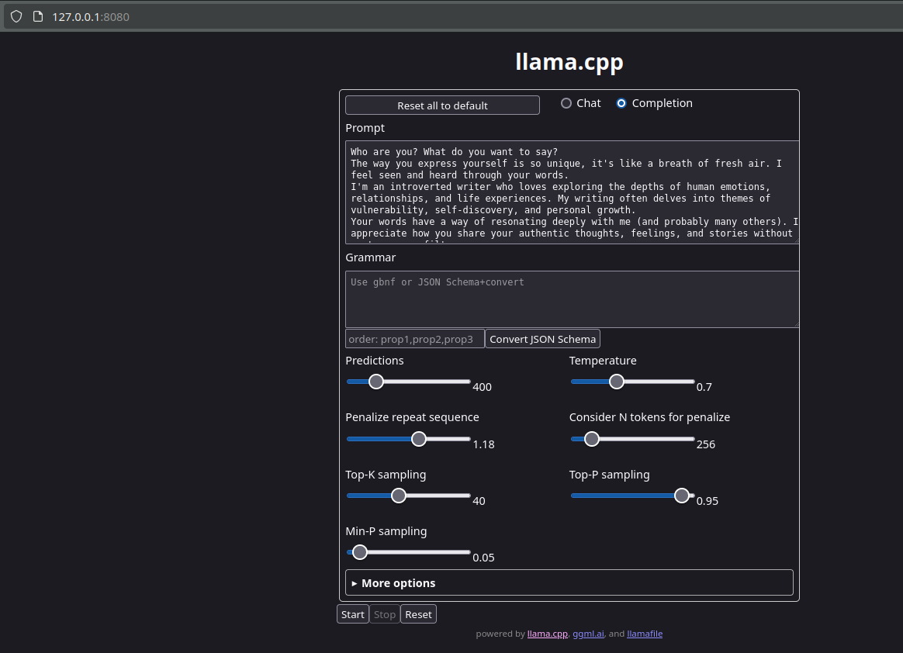

flowchart LR subgraph Mozilla Builders Project c end Llama.cpp --> c[fa:fa-heart llamafile] Cosmopolitan_Libc --> c[fa:fa-heart llamafile]
Background
I recently watched the keynote/demo on llamfile which showed how local LLMs in a single executable. Ollama is great but the additional installation/maintenance overhead it brings can be seen as one of the negatives. That said, most of these tools currently are still in their infancy and with time, they will only get easier to install, use, scale and maintain.
I soon figured that llama index already has an integration for working with llamafiles and a concise blog post on how to use a llamafile to build a rudimentary RAG system.
According to me, the major advantage of a llamafile is that it exposes an API service in addition to a web user interface. This means that we could use the API endpoints from a llamafile and use it in Retrieval Augmented Generation (RAG) projects or any other LLM use case. The available API endpoints are described in this link.
Usage
We can use llamafile’s in three ways
1. Using API endpoints (the API format is same as OpenAI API)
curl http://localhost:8080/v1/chat/completions \
-H "Content-Type: application/json" \
-H "Authorization: Bearer no-key" \
-d '{
"model": "LLaMA_CPP",
"messages": [
{
"role": "system",
"content": "You are a assistant well versed with the documentation of fastapi python module. Guide the user to a acceptable solution. DO NOT small talk or provide extra information. Be objective precise and provide references to you responses."
},
{
"role": "user",
"content": "How to create a private api route in fastapi?"
}
]
}'2. Using Web GUI
When one runs the executable llamafile, a web ui interface is accessible at a choosen port
./e5-mistral-7b-instruct-Q5_K_M.llamafile -ngl 9999 --server --embedding \
--host 0.0.0.0 --port 8080 
3. Using CLI
The executable can also be used via the terminal/cli with corresponding arguments.
./llava-v1.5-7b-q4.llamafile --temp 0.2 --image Transporterposter.jpg \
-e -p '### User: What do you see?\n### Assistant:'The image is a movie poster for the film “The Transporter.” The poster features a man in a suit and tie, holding a gun and pointing it at the camera. The man is the main focus of the poster, and he appears to be the main character in the movie. The poster is displayed in a vertical orientation, showcasing the man’s action-packed pose.
Creating your own llamafiles
All the above is great to know, but how do we put it to use by creating our own llamafile? This sections covers some of the missing steps in the readme.md of the llamafile project. I recommend you to also read the entire readme as it covers some known workarounds to get things going.
Lets begin!
Step 1 - Install llamafile
Clone the llamafile repo from Mozilla. Change directories and run the make install command with sudo permissions.
git clone https://github.com/Mozilla-Ocho/llamafile
cd llamafile
sudo make installThe above command will install all the necessary binaries to this folder /usr/local/bin/llamafile with the following terminal output.
mkdir -p /usr/local/bin
install o//llamafile/zipalign /usr/local/bin/zipalign
install o//llamafile/tokenize /usr/local/bin/llamafile-tokenize
install o//llama.cpp/main/main /usr/local/bin/llamafile
install o//llama.cpp/imatrix/imatrix /usr/local/bin/llamafile-imatrix
install o//llama.cpp/quantize/quantize /usr/local/bin/llamafile-quantize
install o//llama.cpp/llama-bench/llama-bench /usr/local/bin/llamafile-bench
install build/llamafile-convert /usr/local/bin/llamafile-convert
install build/llamafile-upgrade-engine /usr/local/bin/llamafile-upgrade-engine
install o//llama.cpp/perplexity/perplexity /usr/local/bin/llamafile-perplexity
install o//llama.cpp/llava/llava-quantize /usr/local/bin/llava-quantize
mkdir -p /usr/local/share/man/man1
install -m 0644 llamafile/zipalign.1 /usr/local/share/man/man1/zipalign.1
install -m 0644 llama.cpp/main/main.1 /usr/local/share/man/man1/llamafile.1
install -m 0644 llama.cpp/imatrix/imatrix.1 /usr/local/share/man/man1/llamafile-imatrix.1
install -m 0644 llama.cpp/quantize/quantize.1 /usr/local/share/man/man1/llamafile-quantize.1
install -m 0644 llama.cpp/perplexity/perplexity.1 /usr/local/share/man/man1/llamafile-perplexity.1
install -m 0644 llama.cpp/llava/llava-quantize.1 /usr/local/share/man/man1/llava-quantize.1Step 2 - Check version
Open a new terminal window and check the version of llamafile you have.
$ llamafile --version
llamafile v0.8.9Step 3 - Creating the args file
The .args file allows you to customize the llamafile you want to generate. The following is an example content of the .args file
-m
Meta-Llama-3-8B-Instruct-IQ4_NL.gguf
--mmproj
LLaMA3-8B_mmproj-Q4_1.gguf
--host
0.0.0.0
-ngl
9999
...
Note
To create another llamafile just find the appropriate model you want to use and download the .gguf file from HuggingFace and follow the same steps mentioned above.
The --mmproj is optional but the m (model) option is mandatory in the .args file
Step 4 - Building on the llamafile binary
We first copy the llamafile and give it a new name.
cp /usr/local/bin/llamafile llama3.llamafile The working folder should contain the following files.
LlamafileExperiments
│
└───.args
└───Meta-Llama-3-8B-Instruct-IQ4_NL.gguf
└───LLaMA3-8B_mmproj-Q4_1.gguf
└───llama3.llamafile Now use the zipalign binary which is an alternative to zip. This library is designed to concatenate gigabytes of LLM weights to an executable. If you observe the output from Step 1, you see that the zipalign binary was also saved to /usr/local/bin/zipalign. Therefore, your terminal should recognize the zipalign command. Read more about zipalign by using the command man zipalign.
zipalign -j0 \
llama3.llamafile \
Meta-Llama-3-8B-Instruct-IQ4_NL.gguf \
LLaMA3-8B_mmproj-Q4_1.gguf \
.argsThats all! A llama3.llamafile will be generated in that current folder. This can then be run by using any of the three ways mentioned above
./llama3.llamafilePorting the output llamafile to windows
If you want to use the output file in Windows then add the .exe extension to the generated llamafile. For example, llama3.llamafile to llama3.llamafile.exe.
Credits
All this magic with llamafile is possible because of the two previous open-source projects, namely llama.cpp and cosmopolitan_Libc. Kudos to the developers and maintainers! Not to forget all the credit to realize llamafile goes to the Mozilla builders project.